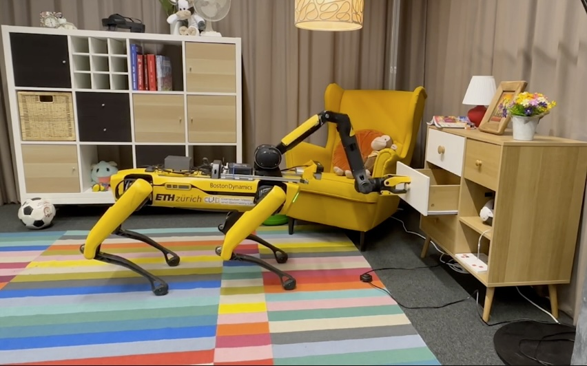

Oliver Lemke
I'm a Master student of Computer Science at ETH Zürich, focusing on 3D Vision and Robotics.
Since 2022, I've been a scholarship holder at the BMW Fastlane Scholarship. I have visited the Intelligent Personal Assistant group, and am currently working in the Perception and Prediction research group under Thomas Stauner and Naveen Shankar Nagaraja. At ETHZ, I was part of the Computer Vision and Geometry Group headed by Prof. Marc Pollefeys, where I work closely with Dr. Zuria Bauer, Dr. Hermann Blum, and Dr. Francis Engelmann on validating machine perception models in real-world environments.
Before starting my MSc, I did my BSc at TUM in Munich, graduating summa cum laude. I wrote my Bachelor thesis on Comparison of vision-based state representation learning algorithms for reinforcement learning of robotic reaching tasks under supervision of Josip Josifovski and Prof. Alois Knoll.
Email / Google Scholar / Github / LinkedIn / CV

News
- May 2024 Our Spot-Compose received a 🏆 Best Paper Award at the ICRA'24 MOMA.v2 workshop.
- April 2024 I started my internship at the Perception and Prediction research group at BMW in Munich, Germany!
- March 2024 Our paper Spot-Compose was accepted to the ICRA'24 MOMA.v2 workshop.
Publications
-

Spot-Compose: A Framework for Open-Vocabulary Object Retrieval and Drawer Manipulation in Point Clouds Proc. International Conference on Robotics and Automation Workshops (ICRAW), 2024. Paper BibTeX Project
@article{zurbrugg2024icgnet, title = {{Spot-Compose: A Framework for Open-Vocabulary Object Retrieval and Drawer Manipulation in Point Clouds}}, author={Oliver Lemke and Zuria Bauer and Ren{\'e} Zurbr{\"u}gg and Marc Pollefeys and Francis Engelmann and Hermann Blum}, journal = {Internationl Conference on Robotics and Automation Workshops (ICRAW)}, year = {2024} }